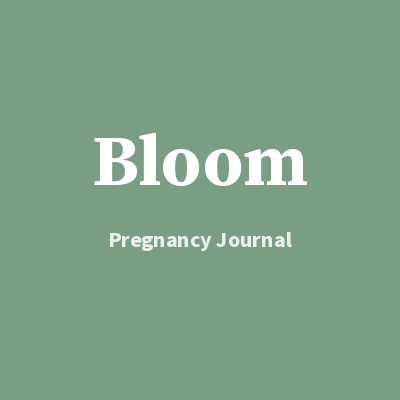

Free printable hospital bag checklist
Pack for labour, birth and the first nights — for you, baby and your partner or support person.

One printable page: a soft sage hospital / birth bag checklist with sections for you, baby, your partner or support person, and nice-to-haves. Adapt for hospital, birth centre or home.
Download free PDFIn the full pack
- Weekly bump notes (undated week slots)
- Appointment log + symptom tracker (with disclaimer)
- Kick count log + hospital bag checklist
- Name brainstorm + registry wishlist
- Birth plan notes (not a clinical birth plan)
- Memory pages + blank masters · partner-friendly
Not medical advice. Bloom is a personal journaling tool. Always follow your midwife, doctor or other qualified clinician.